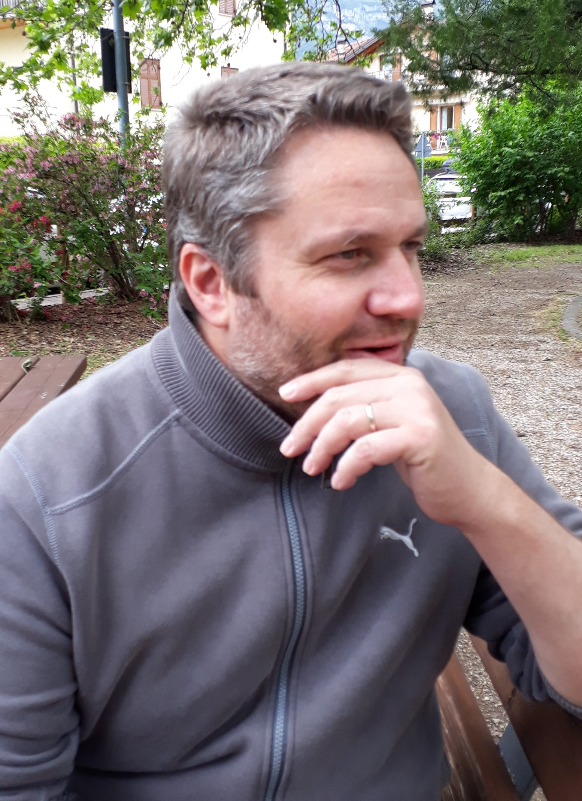

CHI SONO

Nato a Trento e residente nel multietnico sobborgo di Gardolo, sono un madrelingua italiano con lontane ascendenze tirolesi da parte di madre ed uno spiccato interesse per le lingue e culture indo-europee.
Oltre a spingermi a frequentare il liceo linguistico e, in seguito, il corso di laurea in lingue e letterature straniere, quello stesso interesse ha contraddistinto il mio intero percorso professionale e - assieme ad alcune illuminanti esperienze di viaggio e lavoro - ha contribuito a riempire il mio bagaglio di conoscenze e competenze multisettoriali.
Giorno dopo giorno proseguo il mio cammino accompagnato da quel prezioso bagaglio, in cui non manca mai lo spazio per nuovi luoghi, persone ed esperienze.
Nato a Trento e residente nel multietnico sobborgo di Gardolo, sono un madrelingua italiano con lontane ascendenze tirolesi da parte di madre ed uno spiccato interesse per le lingue e culture indo-europee.
Oltre a spingermi a frequentare il liceo linguistico e, in seguito, il corso di laurea in lingue e letterature straniere, quello stesso interesse ha contraddistinto il mio intero percorso professionale e - assieme ad alcune illuminanti esperienze di viaggio e lavoro - ha contribuito a riempire il mio bagaglio di conoscenze e competenze multisettoriali.
Giorno dopo giorno proseguo il mio cammino accompagnato da quel prezioso bagaglio, in cui non manca mai lo spazio per nuovi luoghi, persone ed esperienze.